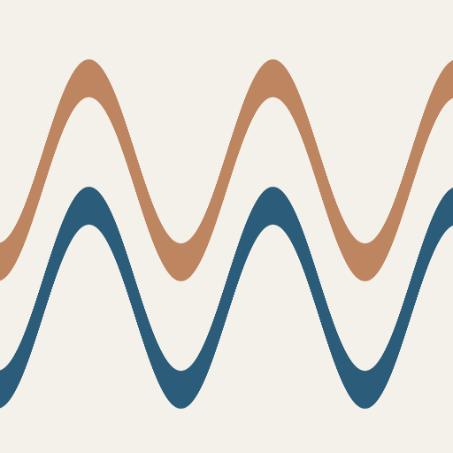
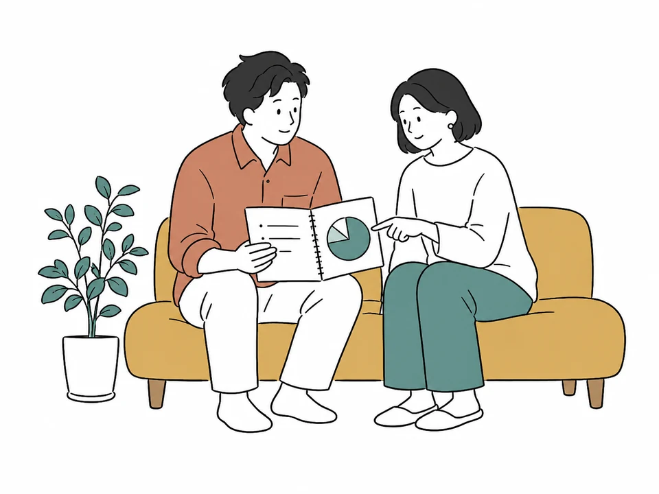
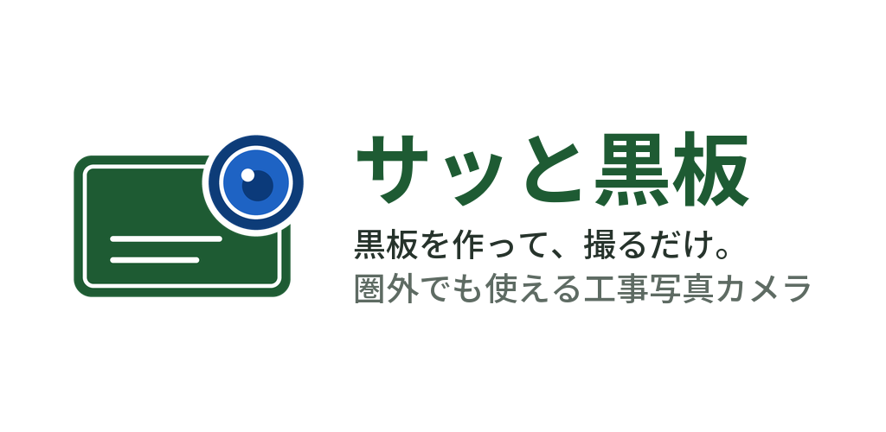
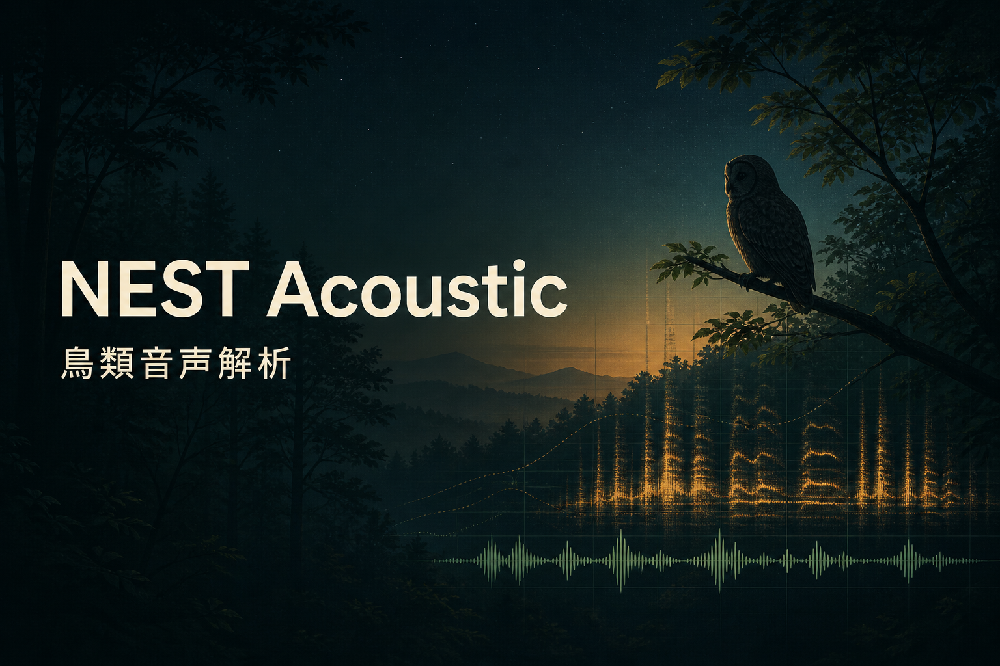

01 / WEB

SHIODOKITIDE DATA / WEB SITE
しおどき
気象庁の公式推算値をもとに、全国の潮見表とタイドグラフを提供。地点検索、10分刻みの潮位、潮が動く時間帯をひとつのサイトにまとめました。
01 / SELECTED WORK
アプリ、Webサイト、制作ツール、取引支援

SHIODOKITIDE DATA / WEB SITE
気象庁の公式推算値をもとに、全国の潮見表とタイドグラフを提供。地点検索、10分刻みの潮位、潮が動く時間帯をひとつのサイトにまとめました。
FISHING / 3D MAP
日本の沿岸を3Dで見ながら、推定等深線、潮汐、天気、周辺施設などを重ねて確認できる釣り人向け地図。

HOUSEHOLD / WEB APP
家族の家計を記録・共有し、年間の収支や将来の計画を考えるためのWebアプリ。日々の記録とライフプランをつなぎます。

CONSTRUCTION / MOBILE APP
工事写真の黒板を自由に作り、撮影時に写真へ写し込むカメラアプリ。現場での入力とオフライン利用を考えて設計しました。

WILDLIFE / WEB APP
長時間録音から鳥の鳴き声を抽出し、夜間の検出と候補種を確認する音声解析アプリ。
PRESENTATION / WORKFLOW
素材から原稿と画像をつくり、編集できるHTMLやPPTXへ仕上げる制作手順とツール。途中で内容と絵柄を確かめながら進められます。
MARKET DATA / MONITORING
確定足を取り込み、BOS・SUP・DEMのセットアップを検知・記録・通知。複数の銘柄と時間足を一覧できる取引支援ツールです。
ALGORITHMIC TRADING / EA
売買シグナルの再現、通貨ペア・時間足ごとの検証、MQL4でのEA実装まで取り組んだ研究・開発プロジェクト。
60+このほかにも、さまざまな条件や戦略のEAを60種類以上制作しています。
02 / ABOUT
生活に役立つWebサービス、現場で使うアプリ、音声や地理データの解析、取引を支えるツールまで。目的に合わせて情報を整理し、実際に使える形へ落とし込んでいます。